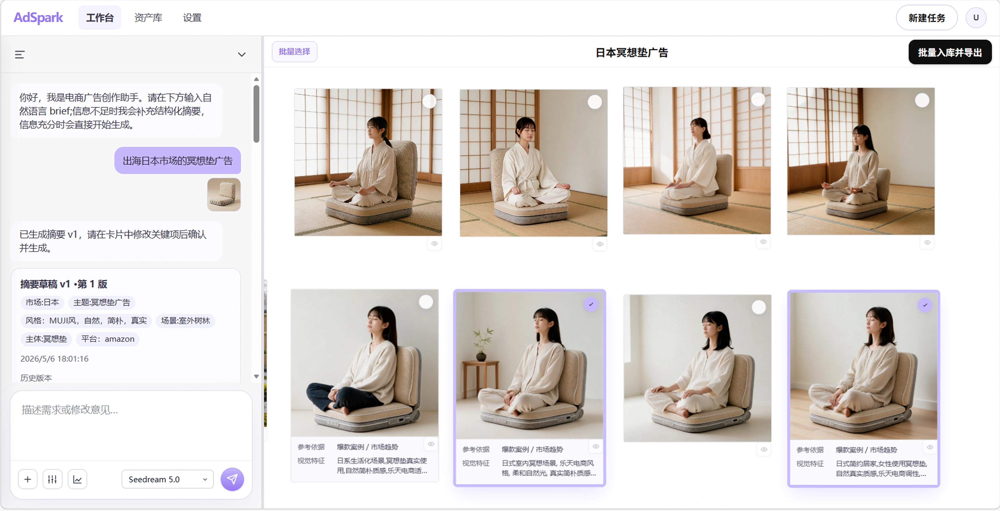
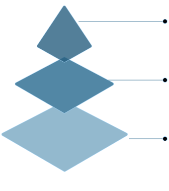

主要使用者
内容／创意运营
快速获得可用首稿，保持产品形态、材质与核心设计元素一致。
出海电商营销素材 Agentic Workflow
Adspark 面向中小型电商出海团队，将市场与品牌信息、素材生成、人工审核和资产记录组织成一条可确认、可修改、可追踪的 Workflow。首期聚焦静态图片，服务新品上市与日常素材迭代两个场景。我独立完成产品设计、前端、后端与 Coze Workflow 搭建，跑通了从结构化 Brief、首次生成、自然语言微调到资产记录的 MVP 主链路。

01 / 问题与场景
同一产品面向不同市场和活动，需要持续产出差异化素材，同时保持品牌与产品的一致性。
我将问题聚焦在中小型电商出海团队的素材生产：如何让每一轮生成，都能承接明确的任务与已有经验？
主要使用者
快速获得可用首稿，保持产品形态、材质与核心设计元素一致。
反馈协作角色
获得可测试的素材变体，并能追溯素材对应的修改与反馈。
整合市场信息、产品资料与品牌规范，为不同审美偏好的市场快速生成多组差异化创意素材
围绕已有素材或特定主题派生变体，延续修改记录，减少每轮重新整理上下文。
提示词编写耗时、需求难表达，
反复试错造成“提示词疲劳”。
减少提示词编写与反复试错，
快速获得可用首稿。
产品形态与材质易失真，
损害品牌一致性与溢价。
生成素材时保持产品形态、材质
与核心设计元素不失真。
生成与投放环节脱节，
效果数据难以反哺创意。
将投放反馈用于下一轮素材生成，复用已验证有效的经验。
具备较强的艺术渲染与图像编辑能力。用于商业素材时，需要核对产品形态、材质与品牌规范，并组织生成之外的审核协作与反馈记录。
围绕媒体平台支持敏捷生产与本地化。跨平台使用时，仍需协调不同平台的素材要求，维护统一的品牌规范与可复用记录。
采用多 Agent 协同编排，覆盖洞察、创意、投放诊断与资产管理。本项目应聚焦其中的静态素材生产，优先连接生成、审核与记录。
用户当前需要的不是一个“更会画图的对话框”，而是一个能承载品牌规则、市场知识和数据反馈的生产力操作系统。因此我选择用 Workflow 编排品牌规则与市场知识，连接素材的生成、审核与记录 ; 在关键节点保留人工判断，让生产过程可追溯、创意经验可复用。
03 / 产品演示
用自然语言描述需求，确认 Brief 后生成素材，再微调并保存结果。
04 / 关键产品决策
V1 采用纯 Chat，连续结果和多版比较容易造成信息淹没。V2 采用“左对话 | 右画布”的布局。将左侧用于意图澄清与摘要补全，右侧用于生成结果、比较、审核和高密度操作。
思考沉淀：不要把用户锁在聊天框里。交互的设计应基于系统对需求的“置信度”来调整
用户在对话框内先用自然语言表达直觉想法，再通过摘要卡片将其转化为结构化的专业信息，可对信息进行补充和编辑。通过“精准输入不打断、模糊输入才辅助”的模式，降低用户表达门槛，确保了商业素材生产的确定性。
思考沉淀：用户不擅长、也不该学习复杂的 Prompt。我们要从“人找流程”转变为“流程找人”
功能定义：融合用户需求、品牌 SOP 与禁用项、竞品及市场趋势、历史素材与反馈，编排为结构化 JSON 生图指令。
核心价值：将品牌约束与视觉参考融入生成过程，减少产品外观偏移，支持市场适配与历史策略复用；自动补全专业视觉描述，降低用户编写 Prompt 的门槛。
功能定义：将素材、Prompt、视觉特征与审核状态关联存档，结合人工回填的投放指标，由 Workflow 按素材 ID 更新记录，供后续任务检索参考。
核心价值：让素材的生成依据与反馈可查看、可追溯，将单次生成结果沉淀为可复用资产，为下一轮创作提供参考。
05 / 系统如何运行
06 / 验证与结果
MVP 已串起素材生产流程，验证重点从“能生成”延伸到质量、稳定性与成本。
50%–60%
内部试用估算 · 相比人工整理、调整与保存流程
耗时减少比例＝（人工流程耗时－Adspark 流程耗时）÷ 人工流程耗时 × 100%
需求确认、生成、微调、审核与资产记录已串联。
开发阶段内部试用
完成 20+ 组素材任务
意图识别与关键字段准确率 ≥95% · 端到端任务成功率 ≥95%
两个 95% 均为待验证目标。需求理解与微调整体符合预期；仍需评测槽位解析准确率、RAG 召回有效率、Prompt 熔炼成功率、生成素材与图生图约束契合度。
耗时减少约 50%–60%（内部估算） · 首版采纳率（目标 >70%）
流程操作得到简化，素材质量仍需人工检查。仍需评测摘要卡片纠错率、平均调整轮次与最终素材可用率。
单位合格素材成本（目标下降 30%–40%）
已完成：资产记录与人工回填基础。待验证：审核通过率、投放 CTR 的潜在提升预估、实际成本下降与投放收益。
发现无参考图时，生成图中的产品易偏移；图生图时，视觉图册的额外作用不明显。
原因判断参考图直接提供产品形态与材质；视觉图册通过文字指令间接约束生图模型。
下一步我将明确参考图要求，并用同一任务验证视觉图册的额外作用。
发现生成图通常符合用户对主体与场景的要求，但部分图片的画面质感不理想。
原因判断生图指令较详细；我判断，画面质感差异主要受生图模型的表现能力影响。
下一步我将分别评估内容准确性与质感，并用同一任务对比不同生图模型。
发现竞品雷达抓取为空不影响生成；抓取节点异常或生图模型停用可能中断链路。
原因判断系统允许缺少竞品信息继续生成，但未对抓取异常或模型停用设置兜底。
下一步我将为竞品抓取增加异常降级与有限重试，并为生图节点设置备用模型。
07 / 复盘与沉淀
从功能搭建走向产品判断，沉淀三个可复用的方法。
生成素材仍会出现形态偏移或风格误读，单纯重试难以解决。AI 输出具有随机性，需要可度量的反馈来定位问题。归因时应分别检查模型能力、提示词约束与 RAG 召回，区分是材质约束不足，还是风格知识未被有效召回和应用。
评测即产品需求。若重做，应更早建立离线评测集，再针对失败类型优化指令约束或更换模型。
Adspark 的价值在于帮助用户更快获得可用素材。因此，MVP 应优先验证素材是否可用、操作是否省时，再判断知识库与数据反馈带来多少额外收益。
功能取舍应以核心价值为依据，避免把功能数量当成产品成熟度。
后台保存数据，并不代表用户能感知它的价值。将生成依据、视觉特征与修改记录呈现在工作台中，才能让用户理解、判断和追溯结果。
AI 的增益的过程与结果必须可视化，否则无法建立用户信任。